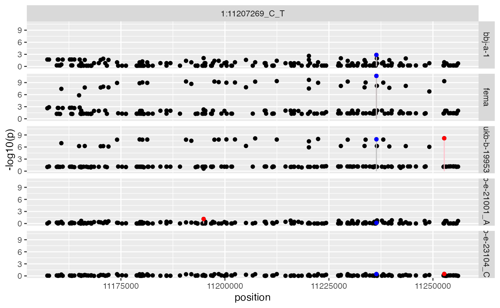
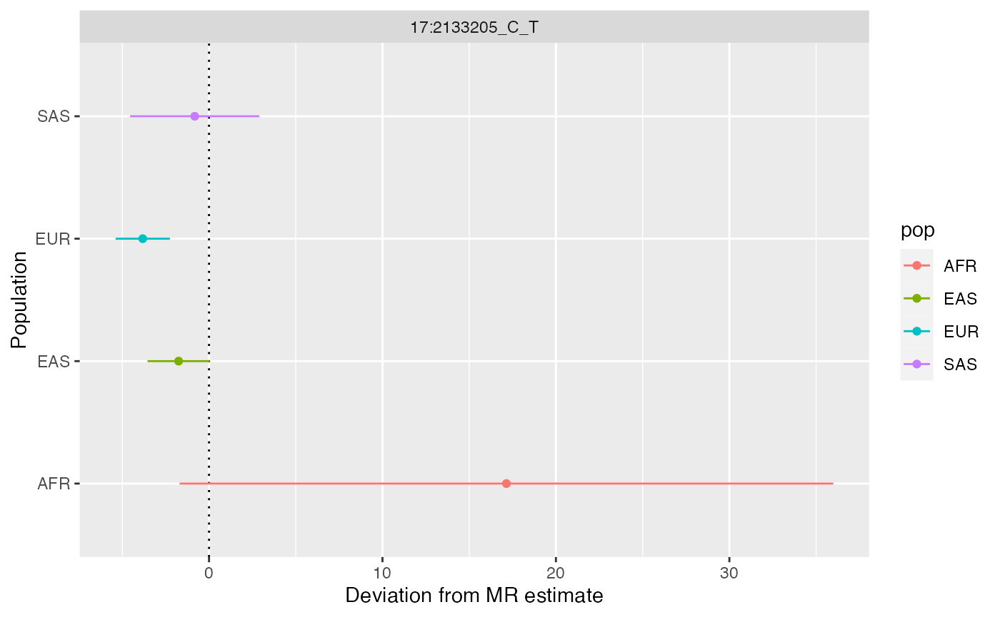
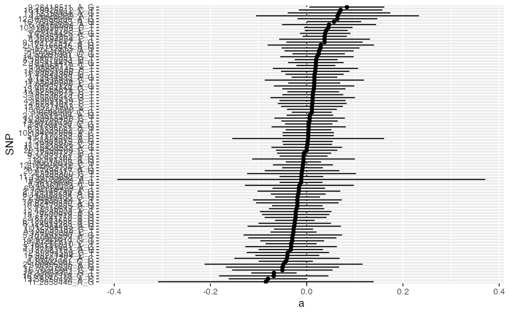
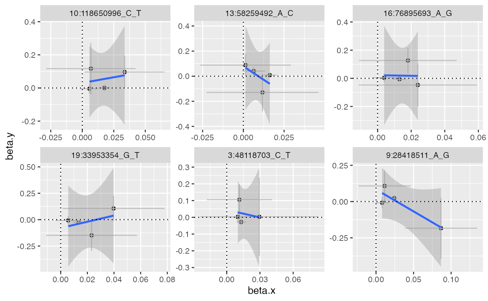

Tutorial
tutorial.Rmd
library(CAMeRa)
#> API: public: http://gwas-api.mrcieu.ac.uk/Introduction
This software attempts to bring together various tools to improve cross-ancestry Mendelian randomisation. It will use an example of performing analysis of BMI on coronary heart disease across four major ancestral groups.
Overview:
- Initialise data
- Check phenotype scales across ancestries
- Extract instruments
- Evaluate instrument heterogeneity across populations
- Extract outcome data
- Harmonise exposure and outcome data
- Perform analysis using raw instruments
- Perform regional scan to obtain LD agnostic instruments
- Re-perform analysis using regional instruments
- Evaluate similarity of pleiotropy across ancestry
- Evaluate similarity of instrument-exposure associations
- Use cross-population instrument-exposure heterogeneity in MR GxE framework to estimate pleiotropy distributions
- Saving and loading data
Initialise data
CAMeRa begins by choosing an exposure and outcome hypothesis that can be tested in multi-ancestral populations. Here, we will be estimating the causal effect of body mass index (BMI) on coronary heart disease (CHD) in European (EUR), East Asian (EAS), African (AFR) and South Asian (SAS) ancestries.
Summary statistics data can be extracted from the IEU GWAS database using the TwoSampleMR package. A list of available traits can be obtained using:
traits <- TwoSampleMR::available_outcomes()You can also browse the available traits here: https://gwas.mrcieu.ac.uk/. Also see other vignettes on this site about how you can use local summary statistics instead.
Once you obtain the study IDs for the exposure and the outcome, open R6 class environment to run CAMERA. The minimum information required for CAMERA is the following:
- Summary statistics for the exposure and the outcome
- Population information
- Plink (ver.1.90)
- LD reference data
Plink (ver.1.90) and LD reference data are required to identify instruments that can be used for both populations. LD reference data can be accessed from: http://fileserve.mrcieu.ac.uk/ld/1kg.v3.tgz.
bfile_dir <- "/path/to/ld_files"
x <- CAMERA$new(
exposure_ids=c(
"ukb-e-23104_CSA",
"ukb-e-21001_AFR",
"ukb-b-19953",
"bbj-a-1"
),
outcome_ids=c(
"ukb-e-411_CSA",
"ukb-e-411_AFR",
"ieu-a-7",
"bbj-a-109"
),
pops = c("SAS", "AFR", "EUR", "EAS"),
bfiles=file.path(bfile_dir, c("SAS", "AFR", "EUR", "EAS")),
plink = genetics.binaRies::get_plink_binary(),
radius=50000,
clump_pop="EUR"
)
x
#> <CAMERA>
#> Public:
#> assign: function (...)
#> bfiles: /path/to/ld_files/SAS /path/to/ld_files/AFR /path/to/ld_ ...
#> check_phenotypes: function (ids = self$exposure_ids)
#> clone: function (deep = FALSE)
#> clump_pop: EUR
#> cross_estimate: function (dat = self$harmonised_dat)
#> estimate_instrument_heterogeneity_per_variant: function (dat = self$harmonised_dat)
#> estimate_instrument_specificity: function (instrument, alpha = "bonferroni", winnerscurse = FALSE)
#> expected_replications: NULL
#> exposure_ids: ukb-e-23104_CSA ukb-e-21001_AFR ukb-b-19953 bbj-a-1
#> exposure_metadata: GwasInfo, data.frame
#> extract_instrument_regions: function (radius = self$radius, instrument_raw = self$instrument_raw,
#> extract_instruments: function (exposure_ids = self$exposure_ids, ...)
#> fema_regional_instruments: function (method = "fema", instrument_regions = self$instrument_regions,
#> get_metadata: function (exposure_ids = self$exposure_ids, outcome_ids = self$outcome_ids)
#> harmonise: function (exp = self$instrument_raw, out = self$instrument_outcome)
#> harmonise_deprecated: function (exp = self$instrument_raw, out = self$instrument_outcome)
#> harmonised_dat: NULL
#> harmonised_dat_sem: NULL
#> harmonised_data_check: NULL
#> import: function (x)
#> import_from_local: function (instrument_raw, instrument_outcome, instrument_regions,
#> initialize: function (exposure_ids = NULL, outcome_ids = NULL, pops = NULL,
#> instrument_fema: NULL
#> instrument_fema_regions: NULL
#> instrument_heterogeneity: function (instrument = self$instrument_raw, alpha = "bonferroni",
#> instrument_heterogeneity_per_variant: NULL
#> instrument_maxz: NULL
#> instrument_mscaviar: NULL
#> instrument_outcome: NULL
#> instrument_outcome_regions: NULL
#> instrument_paintor: NULL
#> instrument_raw: NULL
#> instrument_region_zscores: NULL
#> instrument_regions: NULL
#> instrument_specificity: NULL
#> instrument_specificity_summary: NULL
#> instrument_susie: NULL
#> ld_matrices: NULL
#> make_outcome_data: function (exp = self$instrument_raw, p_exp = 0.05/nrow(exp))
#> mrgxe: function (dat = self$harmonised_dat, variant_list = subset(self$instrument_heterogeneity_per_variant,
#> mrgxe_plot: function (mrgxe_res = self$mrgxe_res)
#> mrgxe_plot_variant: function (variant = self$mrgxe_res %>% dplyr::filter(p.adjust(a_pval,
#> mrgxe_res: NULL
#> mrres: NULL
#> MsCAVIAR_finemap_regions: function (region = self$instrument_regions, ld = self$ld_matrices,
#> mscaviar_results: NULL
#> outcome_ids: ukb-e-411_CSA ukb-e-411_AFR ieu-a-7 bbj-a-109
#> outcome_metadata: GwasInfo, data.frame
#> output: list
#> paintor_finemap_regions: function (region = self$instrument_regions, ld = self$ld_matrices,
#> paintor_results: NULL
#> perform_basic_sem: function (harmonised_dat = self$harmonised_dat_sem)
#> pleiotropy: function (harmonised_dat = self$harmonised_dat)
#> pleiotropy_agreement: NULL
#> pleiotropy_deprecated: function (harmonised_dat = self$harmonised_dat_sem)
#> pleiotropy_outliers: NULL
#> pleiotropy_Q_outliers: NULL
#> pleiotropy_specificity_deprecated: function (harmonised_dat = self$harmonised_dat_sem, sem_result = self$sem_result,
#> plink: /Library/Frameworks/R.framework/Versions/4.3-arm64/Resou ...
#> plot_cross_estimate: function (res = self$mrres, qj_alpha = 0.05)
#> plot_pleiotropy: function (dat = self$pleiotropy_outliers)
#> plot_pleiotropy_heterogeneity: function (dat = self$pleiotropy_Q_outliers, pthresh = 0.05)
#> plot_regional_instruments: function (region, instrument_regions = self$instrument_regions,
#> plot_regional_instruments_maxz: function (instrument_region_zscores = self$instrument_region_zscores,
#> pops: SAS AFR EUR EAS
#> radius: 50000
#> regional_ld_matrices: function (instrument_regions = self$instrument_regions, bfiles = self$bfiles,
#> replication_evaluation: function (instrument = self$instrument_raw, ld = self$ld_matrices)
#> runsem: function (model, data, modname)
#> scan_regional_instruments: function (instrument_raw = self$instrument_raw, instrument_regions = self$instrument_regions)
#> sem_result: NULL
#> set_summary: function ()
#> source: OpenGWAS
#> standardise_data: function (dat = self$instrument_raw, standardise_unit = FALSE,
#> standardised_instrument_maxz: NULL
#> standardised_instrument_mscaviar: NULL
#> standardised_instrument_paintor: NULL
#> standardised_instrument_raw: NULL
#> standardised_instrument_susie: NULL
#> standardised_outcome: NULL
#> summary: NULL
#> susie_finemap_regions: function (dat = self$instrument_regions, ld = self$ld_matrices)
#> susie_results: NULL
#> Private:
#> allele_frequency: function (dat = dat)
#> bootstrap: function (wr, wr.se, ivw, ivw.se, nboot = 1000)
#> bootstrap_diff: function (nboot, slope, slope_se, b_out, b_out_se, b_exp, b_exp_se)
#> greedy_remove: function (r, thresh)
#> jackknife2: function (x, theta, ...)
#> sd_standardise: function (dat = dat)
#> susie_overlaps: function (su1, su2)Check phenotype scales across ancestries
Make sure that the exposures/outcomes are matched across the populations. The different populations should have the same exposure-outcome pair, with exposure and outcome traits measured in the same way and with the same units. Also, instrument-trait associations should be consistent between the populations (e.g. how similar SNP-BMI association in EUR to SNP-BMI assocation in EAS). You can check this as follows:
x$check_phenotypes(ids=x$exposure_ids)
x$check_phenotypes(ids=x$outcome_ids)Extract instruments
We can now perform the analysis, which will do the following:
- Extract instruments for the exposures
- Check the validity of the instruments across the populations (Standardise/scale the data if necessary)
- Extract new instruments based on LD information and fine-mapping
- Extract instruments for the outcomes
- Harmonise the exposure data and the outcome data
- Perform MR
Note see the ?CAMERA for options on the parameters for
this analysis.
The following function identifies SNPs that have strong associations with the exposure in each population. This is the same method as instrument extraction for multivariable MR.
x$extract_instruments()A data frame of the extracted instruments is stored in
x$instrument_raw
str(x$instrument_raw)
#> 'data.frame': 1495 obs. of 14 variables:
#> $ rsid : chr "1:2723214_A_C" "1:6657424_A_C" "1:11207269_C_T" "1:19934900_A_G" ...
#> $ chr : chr "1" "1" "1" "1" ...
#> $ position : int 2723214 6657424 11207269 19934900 23313353 33784146 39564930 47678458 49996959 66434743 ...
#> $ id : chr "ukb-e-23104_CSA" "ukb-e-23104_CSA" "ukb-e-23104_CSA" "ukb-e-23104_CSA" ...
#> $ beta : num -0.0266 -0.0235 0.0171 -0.0148 -0.0169 ...
#> $ se : num 0.0154 0.0154 0.0192 0.0169 0.0146 ...
#> $ p : num 0.0841 0.1262 0.3728 0.3823 0.2496 ...
#> $ ea : chr "A" "A" "C" "A" ...
#> $ nea : chr "C" "C" "T" "G" ...
#> $ eaf : num 0.67 0.676 0.834 0.766 0.422 ...
#> $ units : chr "NA" "NA" "NA" "NA" ...
#> $ samplesize: num 8658 8658 8658 8658 8658 ...
#> $ method : chr "raw" "raw" "raw" "raw" ...
#> $ rsido : chr "rs4648450" "rs3866805" "rs2791643" "rs61740466" ...Evaluate instrument heterogeneity across populations
It is important to ensure that the instruments for the exposure are valid across the populations. Once instruments for the exposure trait are identified for each population, we can assess specificity of the instruments. Each of the following functions estimates heterogeneity of the instruments between and calculates fraction of the instruments (obtained from the Step 1) that are replicated between the populations.
x$instrument_heterogeneity()
#> # A tibble: 6 × 9
#> Reference Replication nsnp agreement se pval I2 Q Q_pval
#> <chr> <chr> <int> <dbl> <dbl> <dbl> <dbl> <dbl> <dbl>
#> 1 ukb-b-199… ukb-e-2310… 367 0.603 0.0505 7.52e- 33 0.123 418. 3.06e- 2
#> 2 ukb-b-199… ukb-e-2100… 367 0.417 0.0703 3.14e- 9 0.143 428. 1.36e- 2
#> 3 ukb-b-199… bbj-a-1 367 0.580 0.0219 7.07e-155 0.658 1074. 8.47e- 71
#> 4 bbj-a-1 ukb-e-2310… 45 0.642 0.111 7.04e- 9 0.415 77.0 1.54e- 3
#> 5 bbj-a-1 ukb-e-2100… 45 0.415 0.152 6.49e- 3 0.426 78.4 1.10e- 3
#> 6 bbj-a-1 ukb-b-19953 45 0.860 0.0512 2.29e- 63 0.947 842. 4.23e-148
x$estimate_instrument_specificity(instrument=x$instrument_raw)
#> Checking ukb-e-23104_CSA against ukb-e-21001_AFR
#> Checking ukb-e-23104_CSA against ukb-b-19953
#> Checking ukb-e-23104_CSA against bbj-a-1
#> Checking ukb-e-21001_AFR against ukb-e-23104_CSA
#> Checking ukb-e-21001_AFR against ukb-b-19953
#> Checking ukb-e-21001_AFR against bbj-a-1
#> Checking ukb-b-19953 against ukb-e-23104_CSA
#> Checking ukb-b-19953 against ukb-e-21001_AFR
#> Checking ukb-b-19953 against bbj-a-1
#> Checking bbj-a-1 against ukb-e-23104_CSA
#> Checking bbj-a-1 against ukb-e-21001_AFR
#> Checking bbj-a-1 against ukb-b-19953
#> discovery replication nsnp metric datum value
#> 1 ukb-e-21001_AFR ukb-e-23104_CSA 1 P-value Expected 0.9987959
#> 2 ukb-e-21001_AFR ukb-e-23104_CSA 1 P-value Observed 1.0000000
#> 3 ukb-e-21001_AFR ukb-e-23104_CSA 1 Sign Expected 0.9999995
#> 4 ukb-e-21001_AFR ukb-e-23104_CSA 1 Sign Observed 1.0000000
#> 5 ukb-e-21001_AFR ukb-b-19953 1 P-value Expected 1.0000000
#> 6 ukb-e-21001_AFR ukb-b-19953 1 P-value Observed 1.0000000
#> 7 ukb-e-21001_AFR ukb-b-19953 1 Sign Expected 0.9999995
#> 8 ukb-e-21001_AFR ukb-b-19953 1 Sign Observed 1.0000000
#> 9 ukb-e-21001_AFR bbj-a-1 1 P-value Expected 1.0000000
#> 10 ukb-e-21001_AFR bbj-a-1 1 P-value Observed 1.0000000
#> 11 ukb-e-21001_AFR bbj-a-1 1 Sign Expected 0.9999995
#> 12 ukb-e-21001_AFR bbj-a-1 1 Sign Observed 1.0000000
#> 13 ukb-b-19953 ukb-e-23104_CSA 367 P-value Expected 1.7683672
#> 14 ukb-b-19953 ukb-e-23104_CSA 367 P-value Observed 2.0000000
#> 15 ukb-b-19953 ukb-e-23104_CSA 367 Sign Expected 306.2709020
#> 16 ukb-b-19953 ukb-e-23104_CSA 367 Sign Observed 261.0000000
#> 17 ukb-b-19953 ukb-e-21001_AFR 367 P-value Expected 0.4150693
#> 18 ukb-b-19953 ukb-e-21001_AFR 367 P-value Observed 1.0000000
#> 19 ukb-b-19953 ukb-e-21001_AFR 367 Sign Expected 277.0372286
#> 20 ukb-b-19953 ukb-e-21001_AFR 367 Sign Observed 217.0000000
#> 21 ukb-b-19953 bbj-a-1 367 P-value Expected 125.8672314
#> 22 ukb-b-19953 bbj-a-1 367 P-value Observed 42.0000000
#> 23 ukb-b-19953 bbj-a-1 367 Sign Expected 362.4660856
#> 24 ukb-b-19953 bbj-a-1 367 Sign Observed 321.0000000
#> 25 bbj-a-1 ukb-e-23104_CSA 45 P-value Expected 1.4396361
#> 26 bbj-a-1 ukb-e-23104_CSA 45 P-value Observed 2.0000000
#> 27 bbj-a-1 ukb-e-23104_CSA 45 Sign Expected 41.3635330
#> 28 bbj-a-1 ukb-e-23104_CSA 45 Sign Observed 35.0000000
#> 29 bbj-a-1 ukb-e-21001_AFR 45 P-value Expected 0.2681076
#> 30 bbj-a-1 ukb-e-21001_AFR 45 P-value Observed 1.0000000
#> 31 bbj-a-1 ukb-e-21001_AFR 45 Sign Expected 38.0010867
#> 32 bbj-a-1 ukb-e-21001_AFR 45 Sign Observed 27.0000000
#> 33 bbj-a-1 ukb-b-19953 45 P-value Expected 44.3523980
#> 34 bbj-a-1 ukb-b-19953 45 P-value Observed 40.0000000
#> 35 bbj-a-1 ukb-b-19953 45 Sign Expected 44.9998612
#> 36 bbj-a-1 ukb-b-19953 45 Sign Observed 45.0000000
#> pdiff
#> 1 1.000000e+00
#> 2 1.000000e+00
#> 3 1.000000e+00
#> 4 1.000000e+00
#> 5 1.000000e+00
#> 6 1.000000e+00
#> 7 1.000000e+00
#> 8 1.000000e+00
#> 9 1.000000e+00
#> 10 1.000000e+00
#> 11 1.000000e+00
#> 12 1.000000e+00
#> 13 6.981287e-01
#> 14 6.981287e-01
#> 15 3.629548e-09
#> 16 3.629548e-09
#> 17 3.398606e-01
#> 18 3.398606e-01
#> 19 5.755367e-12
#> 20 5.755367e-12
#> 21 1.064999e-23
#> 22 1.064999e-23
#> 23 3.048804e-31
#> 24 3.048804e-31
#> 25 6.557071e-01
#> 26 6.557071e-01
#> 27 2.716399e-03
#> 28 2.716399e-03
#> 29 2.357876e-01
#> 30 2.357876e-01
#> 31 6.800783e-05
#> 32 6.800783e-05
#> 33 4.670267e-04
#> 34 4.670267e-04
#> 35 1.000000e+00
#> 36 1.000000e+00Harmonise exposure and outcome data
x$harmonise()
#> # A tibble: 4 × 4
#> pops exposure_ids outcome_ids source
#> <chr> <chr> <chr> <chr>
#> 1 SAS ukb-e-23104_CSA ukb-e-411_CSA OpenGWAS
#> 2 AFR ukb-e-21001_AFR ukb-e-411_AFR OpenGWAS
#> 3 EUR ukb-b-19953 ieu-a-7 OpenGWAS
#> 4 EAS bbj-a-1 bbj-a-109 OpenGWAS
#> 'data.frame': 1495 obs. of 4 variables:
#> $ SNP : chr "1:2723214_A_C" "1:6657424_A_C" "1:11207269_C_T" "1:19934900_A_G" ...
#> $ pops: chr "SAS" "SAS" "SAS" "SAS" ...
#> $ beta: num -0.0266 -0.0235 0.0171 -0.0148 -0.0169 ...
#> $ se : num 0.0154 0.0154 0.0192 0.0169 0.0146 ...
#> NULL
#> 'data.frame': 2434 obs. of 4 variables:
#> $ SNP : chr "1:11207269_C_T" "1:11207269_C_T" "1:11207269_C_T" "1:11207269_C_T" ...
#> $ pops: chr "SAS" "AFR" "EUR" "EAS" ...
#> $ beta: num -0.06663 -0.09457 -0.00328 0.0234 0.00391 ...
#> $ se : num 0.0594 0.0809 0.0112 0.0319 0.0457 ...
#> NULL
#> 'data.frame': 1477 obs. of 6 variables:
#> $ SNP : chr "1:2723214_A_C" "1:6657424_A_C" "1:11207269_C_T" "1:19934900_A_G" ...
#> $ pops : chr "SAS" "SAS" "SAS" "SAS" ...
#> $ beta.x: num -0.0266 -0.0235 0.0171 -0.0148 -0.0169 ...
#> $ se.x : num 0.0154 0.0154 0.0192 0.0169 0.0146 ...
#> $ beta.y: num -0.0152 -0.0295 -0.0666 0.0603 0.0465 ...
#> $ se.y : num 0.048 0.0479 0.0594 0.0527 0.0456 ...
#> NULLPerform analysis using raw instruments
We will perform an inverse variance weighted fixed effects MR method within population and across all populations. Heterogeneity estimates will be generated to evaluate if each population has a distinct association compared to others. The combined estimate across all populations assumes that the effect is drawn from the same distribution and if that assumption holds then then power is improved because of the combined information.
x$cross_estimate()
#> $coefficients
#> # A tibble: 5 × 8
#> pops Estimate `Std. Error` `t value` `Pr(>|t|)` Qj Qjpval Qdf
#> <chr> <dbl> <dbl> <dbl> <dbl> <dbl> <dbl> <dbl>
#> 1 All 0.350 0.0303 11.5 1.52e-29 3.14 0.371 3
#> 2 AFR 0.318 0.222 1.43 1.53e- 1 0.0203 0.887 1
#> 3 EAS 0.476 0.0784 6.07 1.62e- 9 2.60 0.107 1
#> 4 EUR 0.325 0.0342 9.52 6.61e-21 0.503 0.478 1
#> 5 SAS 0.366 0.142 2.58 9.98e- 3 0.0141 0.906 1Here we see a very consistent assocation across all ancestries. Note
that the All estimate is slightly more precisely estimated
than any of the others because it is combining similar estimates.
We can visualise the estimates:
x$plot_cross_estimate()
Perform regional scan to obtain LD agnostic instruments
We can re-select the instruments scanning across the region. The intention here is to allow all populations to contribute to a fixed effects meta analysis to account for LD. Then the top variant in the region from the meta analysis is used as the instrument for all populations.
x$extract_instrument_regions()This has extracted regions around all the pooled instruments from each exposure dataset. Now we can use either fixed effects meta analysis within each region to choose the best SNP across all ancestries. For the cases where the most strongly associated SNPs are not available at exactly the same position, the function searches alternative SNPs that are located near the original SNP and show the largest effect size magnitude.
x$fema_regional_instruments() %>% str()
#> tibble [1,492 × 13] (S3: tbl_df/tbl/data.frame)
#> $ beta : num [1:1492] 0.0174 -0.0312 0.0144 0.012 0.0258 ...
#> $ n : num [1:1492] NA NA 461460 NA NA ...
#> $ se : num [1:1492] 0.01609 0.02562 0.00199 0.00422 0.01579 ...
#> $ position: int [1:1492] 2722848 2722848 2722848 2722848 6694927 6694927 6694927 6694927 11236410 11236410 ...
#> $ p : num [1:1492] 2.80e-01 2.24e-01 5.10e-13 4.33e-03 1.02e-01 ...
#> $ chr : chr [1:1492] "1" "1" "1" "1" ...
#> $ id : chr [1:1492] "ukb-e-23104_CSA" "ukb-e-21001_AFR" "ukb-b-19953" "bbj-a-1" ...
#> $ rsid : chr [1:1492] "1:2722848_C_T" "1:2722848_C_T" "1:2722848_C_T" "1:2722848_C_T" ...
#> $ ea : chr [1:1492] "C" "C" "C" "C" ...
#> $ nea : chr [1:1492] "T" "T" "T" "T" ...
#> $ eaf : num [1:1492] 0.285 0.141 0.534 0.565 0.286 ...
#> $ trait : chr [1:1492] "Body mass index (BMI)" "Body mass index (BMI)" "Body mass index (BMI)" "Body mass index" ...
#> $ rsido : chr [1:1492] "rs6692145" "rs6692145" "rs6692145" "rs6692145" ...or use a Z-score based meta analysis if you are unsure about whether the effect size scales are sufficiently consistent across the studies:
x$fema_regional_instruments(method="zma") %>% str()
#> tibble [1,492 × 13] (S3: tbl_df/tbl/data.frame)
#> $ beta : num [1:1492] 0.0174 -0.0312 0.0144 0.012 0.027 ...
#> $ n : num [1:1492] NA NA 461460 NA NA ...
#> $ se : num [1:1492] 0.01609 0.02562 0.00199 0.00422 0.01562 ...
#> $ position: int [1:1492] 2722848 2722848 2722848 2722848 6684906 6684906 6684906 6684906 11236410 11236410 ...
#> $ p : num [1:1492] 2.80e-01 2.24e-01 5.10e-13 4.33e-03 8.35e-02 ...
#> $ chr : chr [1:1492] "1" "1" "1" "1" ...
#> $ id : chr [1:1492] "ukb-e-23104_CSA" "ukb-e-21001_AFR" "ukb-b-19953" "bbj-a-1" ...
#> $ rsid : chr [1:1492] "1:2722848_C_T" "1:2722848_C_T" "1:2722848_C_T" "1:2722848_C_T" ...
#> $ ea : chr [1:1492] "C" "C" "C" "C" ...
#> $ nea : chr [1:1492] "T" "T" "T" "T" ...
#> $ eaf : num [1:1492] 0.285 0.141 0.534 0.565 0.298 ...
#> $ trait : chr [1:1492] "Body mass index (BMI)" "Body mass index (BMI)" "Body mass index (BMI)" "Body mass index" ...
#> $ rsido : chr [1:1492] "rs6692145" "rs6692145" "rs6692145" "rs6692145" ...Example
x$plot_regional_instruments(names(x$instrument_regions)[3])
Here, the European top hit is in LD with many other variants in the European ancestry, but meta-analysing with the other ancestries identified a similarly strongly associated variant in Europeans that is also strongly associated in East Asians. Had we used the European top hit then we would have missed the stronger association in the region that associates with other ancestries too. Note that the sample sizes for the SAS and AFR studies are very small and relatively underpowered throughout the analysis.
Re-perform analysis using regional instruments
Note that we’re now making a copy of x to change the
x$outcome_outcome and x$harmonised_dat objects
to reflect the regional instrument selection. But because x
is an R6 class object, we need to explicitly use the
x$clone() function to create a new copy.
x1 <- x$clone()Now override the harmonised data using the regional instrument selection
x$make_outcome_data(exp=x$instrument_fema)Re-harmonise with the newly extracted data
x$harmonise(exp=x$instrument_fema)
#> # A tibble: 4 × 4
#> pops exposure_ids outcome_ids source
#> <chr> <chr> <chr> <chr>
#> 1 SAS ukb-e-23104_CSA ukb-e-411_CSA OpenGWAS
#> 2 AFR ukb-e-21001_AFR ukb-e-411_AFR OpenGWAS
#> 3 EUR ukb-b-19953 ieu-a-7 OpenGWAS
#> 4 EAS bbj-a-1 bbj-a-109 OpenGWAS
#> tibble [1,492 × 4] (S3: tbl_df/tbl/data.frame)
#> $ SNP : chr [1:1492] "1:2722848_C_T" "1:2722848_C_T" "1:2722848_C_T" "1:2722848_C_T" ...
#> $ pops: chr [1:1492] "SAS" "AFR" "EUR" "EAS" ...
#> $ beta: num [1:1492] 0.0174 -0.0312 0.0144 0.012 0.027 ...
#> $ se : num [1:1492] 0.01609 0.02562 0.00199 0.00422 0.01562 ...
#> NULL
#> 'data.frame': 2434 obs. of 4 variables:
#> $ SNP : chr "1:11207269_C_T" "1:11207269_C_T" "1:11207269_C_T" "1:11207269_C_T" ...
#> $ pops: chr "SAS" "AFR" "EUR" "EAS" ...
#> $ beta: num -0.06663 -0.09457 -0.00328 0.0234 0.00391 ...
#> $ se : num 0.0594 0.0809 0.0112 0.0319 0.0457 ...
#> NULL
#> tibble [1,487 × 6] (S3: tbl_df/tbl/data.frame)
#> $ SNP : chr [1:1487] "1:2722848_C_T" "1:2722848_C_T" "1:2722848_C_T" "1:2722848_C_T" ...
#> $ pops : chr [1:1487] "SAS" "AFR" "EUR" "EAS" ...
#> $ beta.x: num [1:1487] 0.0174 -0.0312 0.0144 0.012 0.027 ...
#> $ se.x : num [1:1487] 0.01609 0.02562 0.00199 0.00422 0.01562 ...
#> $ beta.y: num [1:1487] -0.00619 -0.07145 0.00269 -0.01034 0.05529 ...
#> $ se.y : num [1:1487] 0.05008 0.1119 0.00969 0.01632 0.04868 ...
#> NULLRe-estimate the MR associations using the newly derived regional instruments
x$cross_estimate()
#> $coefficients
#> # A tibble: 5 × 8
#> pops Estimate `Std. Error` `t value` `Pr(>|t|)` Qj Qjpval Qdf
#> <chr> <dbl> <dbl> <dbl> <dbl> <dbl> <dbl> <dbl>
#> 1 All 0.460 0.0291 15.8 3.94e-52 1.91 0.591 3
#> 2 AFR 0.379 0.193 1.96 4.97e- 2 0.176 0.675 1
#> 3 EAS 0.544 0.0712 7.65 3.69e-14 1.38 0.240 1
#> 4 EUR 0.448 0.0334 13.4 5.99e-39 0.131 0.718 1
#> 5 SAS 0.396 0.136 2.92 3.52e- 3 0.226 0.635 1The precision of the associations are improved because of the improved instrument selection.
x$plot_cross_estimate()
Evaluate instrument specificity. First using heterogeneity
x$instrument_heterogeneity(x$instrument_fema)
#> # A tibble: 6 × 9
#> Reference Replication nsnp agreement se pval I2 Q Q_pval
#> <chr> <chr> <int> <dbl> <dbl> <dbl> <dbl> <dbl> <dbl>
#> 1 ukb-b-199… ukb-e-2310… 370 0.685 0.0497 3.25e- 43 0.101 412. 6.21e- 2
#> 2 ukb-b-199… ukb-e-2100… 370 0.540 0.0781 4.58e- 12 0.305 533. 4.89e- 8
#> 3 ukb-b-199… bbj-a-1 370 0.689 0.0228 2.46e-200 0.680 1155. 9.07e-82
#> 4 bbj-a-1 ukb-e-2310… 59 0.809 0.0790 1.28e- 24 0.0275 60.7 3.80e- 1
#> 5 bbj-a-1 ukb-e-2100… 59 0.718 0.136 1.18e- 7 0.311 85.7 1.05e- 2
#> 6 bbj-a-1 ukb-b-19953 59 0.877 0.0353 3.64e-136 0.905 619. 7.37e-95Compared to above the agreement regression slopes are
much closer to 1 for all ancestries.
x$estimate_instrument_specificity(x$instrument_fema, alpha = "bonferroni")
#> Checking ukb-e-23104_CSA against ukb-e-21001_AFR
#> Checking ukb-e-23104_CSA against ukb-b-19953
#> Checking ukb-e-23104_CSA against bbj-a-1
#> Checking ukb-e-21001_AFR against ukb-e-23104_CSA
#> Checking ukb-e-21001_AFR against ukb-b-19953
#> Checking ukb-e-21001_AFR against bbj-a-1
#> Checking ukb-b-19953 against ukb-e-23104_CSA
#> Checking ukb-b-19953 against ukb-e-21001_AFR
#> Checking ukb-b-19953 against bbj-a-1
#> Checking bbj-a-1 against ukb-e-23104_CSA
#> Checking bbj-a-1 against ukb-e-21001_AFR
#> Checking bbj-a-1 against ukb-b-19953
#> discovery replication nsnp metric datum value
#> 1 ukb-e-21001_AFR ukb-e-23104_CSA 1 P-value Expected 0.9987977
#> 2 ukb-e-21001_AFR ukb-e-23104_CSA 1 P-value Observed 1.0000000
#> 3 ukb-e-21001_AFR ukb-e-23104_CSA 1 Sign Expected 0.9999995
#> 4 ukb-e-21001_AFR ukb-e-23104_CSA 1 Sign Observed 1.0000000
#> 5 ukb-e-21001_AFR ukb-b-19953 1 P-value Expected 1.0000000
#> 6 ukb-e-21001_AFR ukb-b-19953 1 P-value Observed 1.0000000
#> 7 ukb-e-21001_AFR ukb-b-19953 1 Sign Expected 0.9999995
#> 8 ukb-e-21001_AFR ukb-b-19953 1 Sign Observed 1.0000000
#> 9 ukb-e-21001_AFR bbj-a-1 1 P-value Expected 1.0000000
#> 10 ukb-e-21001_AFR bbj-a-1 1 P-value Observed 1.0000000
#> 11 ukb-e-21001_AFR bbj-a-1 1 Sign Expected 0.9999995
#> 12 ukb-e-21001_AFR bbj-a-1 1 Sign Observed 1.0000000
#> 13 ukb-b-19953 ukb-e-23104_CSA 370 P-value Expected 1.8157266
#> 14 ukb-b-19953 ukb-e-23104_CSA 370 P-value Observed 2.0000000
#> 15 ukb-b-19953 ukb-e-23104_CSA 370 Sign Expected 309.1513616
#> 16 ukb-b-19953 ukb-e-23104_CSA 370 Sign Observed 267.0000000
#> 17 ukb-b-19953 ukb-e-21001_AFR 370 P-value Expected 0.3249830
#> 18 ukb-b-19953 ukb-e-21001_AFR 370 P-value Observed 1.0000000
#> 19 ukb-b-19953 ukb-e-21001_AFR 370 Sign Expected 280.3798398
#> 20 ukb-b-19953 ukb-e-21001_AFR 370 Sign Observed 224.0000000
#> 21 ukb-b-19953 bbj-a-1 370 P-value Expected 125.4393111
#> 22 ukb-b-19953 bbj-a-1 370 P-value Observed 57.0000000
#> 23 ukb-b-19953 bbj-a-1 370 Sign Expected 365.6500239
#> 24 ukb-b-19953 bbj-a-1 370 Sign Observed 326.0000000
#> 25 bbj-a-1 ukb-e-23104_CSA 59 P-value Expected 1.5690627
#> 26 bbj-a-1 ukb-e-23104_CSA 59 P-value Observed 2.0000000
#> 27 bbj-a-1 ukb-e-23104_CSA 59 Sign Expected 53.7020322
#> 28 bbj-a-1 ukb-e-23104_CSA 59 Sign Observed 49.0000000
#> 29 bbj-a-1 ukb-e-21001_AFR 59 P-value Expected 0.2168368
#> 30 bbj-a-1 ukb-e-21001_AFR 59 P-value Observed 1.0000000
#> 31 bbj-a-1 ukb-e-21001_AFR 59 Sign Expected 49.0352256
#> 32 bbj-a-1 ukb-e-21001_AFR 59 Sign Observed 40.0000000
#> 33 bbj-a-1 ukb-b-19953 59 P-value Expected 58.5784421
#> 34 bbj-a-1 ukb-b-19953 59 P-value Observed 56.0000000
#> 35 bbj-a-1 ukb-b-19953 59 Sign Expected 58.9999029
#> 36 bbj-a-1 ukb-b-19953 59 Sign Observed 59.0000000
#> pdiff
#> 1 1.000000e+00
#> 2 1.000000e+00
#> 3 1.000000e+00
#> 4 1.000000e+00
#> 5 1.000000e+00
#> 6 1.000000e+00
#> 7 1.000000e+00
#> 8 1.000000e+00
#> 9 1.000000e+00
#> 10 1.000000e+00
#> 11 1.000000e+00
#> 12 1.000000e+00
#> 13 7.044128e-01
#> 14 7.044128e-01
#> 15 3.380126e-08
#> 16 3.380126e-08
#> 17 2.775636e-01
#> 18 2.775636e-01
#> 19 1.129478e-10
#> 20 1.129478e-10
#> 21 1.525549e-15
#> 22 1.525549e-15
#> 23 7.530802e-30
#> 24 7.530802e-30
#> 25 6.713860e-01
#> 26 6.713860e-01
#> 27 4.016606e-02
#> 28 4.016606e-02
#> 29 1.952602e-01
#> 30 1.952602e-01
#> 31 4.477276e-03
#> 32 4.477276e-03
#> 33 8.803643e-03
#> 34 8.803643e-03
#> 35 1.000000e+00
#> 36 1.000000e+00
x$instrument_specificity$distinct %>% table
#> .
#> FALSE TRUE
#> 1124 166The number of apparently distinct instruments is reduced also.
Evaluate similarity of pleiotropy across ancestry
Note: the term pleiotropy used here refers to ‘horizontal pleiotropy’, the influence of the SNP on the outcome not mediated through the exposure.
Here we will find pleiotropy outliers from the MR analysis, and then determine if the deviation of those outliers from the overall MR estimates is consistent across populations
x$pleiotropy()Outliers are detected based on whether a SNP’s Wald ratio (in a particular population) is substantially different from the overall estimate. The overall estimate is the combined meta-analysis across all populations and all SNPs, unless that population’s overall MR estimate contributed substantially to heterogeneity. In that case, deviation is estimated based on the population’s specific MR estimate.
x$pleiotropy_outliers
#> # A tibble: 36 × 16
#> SNP pops beta.x se.x beta.y se.y pval.x pval.y wr
#> <chr> <chr> <dbl> <dbl> <dbl> <dbl> <dbl> <dbl> <dbl>
#> 1 10:1049422… SAS 0.0154 0.0176 3.00e-2 0.0546 1.90e- 1 2.91e-1 1.95e+0
#> 2 10:1049422… AFR 0.0732 0.0867 -1.10e-5 0.385 1.99e- 1 5.00e-1 -1.50e-4
#> 3 10:1049422… EUR 0.0238 0.00370 -7.70e-2 0.0144 6.14e-11 4.69e-8 -3.24e+0
#> 4 10:1049422… EAS 0.0253 0.00423 -2.79e-2 0.0177 1.12e- 9 5.73e-2 -1.10e+0
#> 5 11:1331520… SAS 0.00115 0.0145 -4.07e-2 0.0453 4.68e- 1 1.84e-1 -3.55e+1
#> 6 11:1331520… AFR -0.102 0.0381 -2.18e-2 0.168 3.81e- 3 4.49e-1 2.14e-1
#> 7 11:1331520… EUR 0.0164 0.00200 4.00e-2 0.00974 1.15e-16 2.00e-5 2.44e+0
#> 8 11:1331520… EAS 0.0103 0.00451 8.29e-3 0.0189 1.13e- 2 3.30e-1 8.06e-1
#> 9 11:1169473… SAS -0.00940 0.0267 -7.18e-2 0.0830 3.62e- 1 1.93e-1 7.64e+0
#> 10 11:1169473… AFR -0.0268 0.0327 1.15e-1 0.144 2.06e- 1 2.12e-1 -4.28e+0
#> # ℹ 26 more rows
#> # ℹ 7 more variables: wr.se <dbl>, biv <dbl>, biv.se <dbl>, dif <dbl>,
#> # dif.se <dbl>, Qj <dbl>, Qjpval <dbl>For outliers from a population, are other populations showing similar deviation to the outlier discovery population? e.g. look at whether the sign is the same for outliers discovered in Europeans:
x$pleiotropy_agreement %>% as.data.frame %>% subset(disc == "EUR" & metric=="Sign")
#> disc rep nsnp metric datum value pdiff
#> 15 EUR SAS 8 Sign Expected 6.142359 0.09065468
#> 16 EUR SAS 8 Sign Observed 4.000000 0.09065468
#> 19 EUR AFR 8 Sign Expected 5.737231 0.04563731
#> 20 EUR AFR 8 Sign Observed 3.000000 0.04563731
#> 23 EUR EAS 8 Sign Expected 7.397345 0.01794272
#> 24 EUR EAS 8 Sign Observed 5.000000 0.01794272Look at the overall relationship of outlier deviations across populations
x$plot_pleiotropy()
#> Joining with `by = join_by(pop1)`
#> Joining with `by = join_by(pop2, SNP)`
#> `geom_smooth()` using formula = 'y ~ x'
Identify any variants that showed substantial differences in pleiotropy deviations across populations. Note that sometimes the pleiotropy deviation estimate is unstable due to the SNP-exposure association being very small. Unstable estimates are attempted to be removed automatically from the heterogeneity analysis
x$plot_pleiotropy_heterogeneity(pthresh=0.05)
No SNPs are showing substantial differences in pleiotropy deviation across populations. Plot everything by relaxing the threshold
x$plot_pleiotropy_heterogeneity(pthresh=1)
MR GxE
The MR GxE model aims to estimate the horizontal pleiotropic effect of a SNP. This is achieved by estimating its effect on the outcome in a subset of the data where the SNP is not expected to have an association (the zero relevance group). The cross-ancestry MR analysis can attempt to make use of this approach by identifying variants that exhibit heterogeneity in the instrument-exposure association across ancestries. Those instruments can then be used to estimate the pleiotropic association by evaluating their effect on the outcome across populations showing differential SNP-exposure associations.
First identify examples of heterogeneity amongst instrument-exposure associations
x$estimate_instrument_heterogeneity_per_variant()
#> # A tibble: 373 × 5
#> # Groups: SNP [373]
#> SNP Qdf Q Qpval Qfdr
#> <chr> <dbl> <dbl> <dbl> <dbl>
#> 1 10:104942244_G_T 3 0.650 0.885 0.885
#> 2 10:118650996_C_T 3 17.7 0.000502 0.000502
#> 3 10:134007008_A_C 3 8.12 0.0436 0.0436
#> 4 10:16750129_G_T 3 0.510 0.917 0.917
#> 5 10:18573654_A_G 3 6.63 0.0847 0.0847
#> 6 10:21830104_A_G 3 3.19 0.363 0.363
#> 7 10:33955430_C_T 3 13.5 0.00375 0.00375
#> 8 10:53673286_A_G 3 4.26 0.235 0.235
#> 9 10:61842645_C_T 3 6.16 0.104 0.104
#> 10 10:65191645_G_T 3 0.621 0.892 0.892
#> # ℹ 363 more rows
x$instrument_heterogeneity_per_variant %>% dplyr::filter(Qfdr < 0.05)
#> # A tibble: 95 × 5
#> # Groups: SNP [95]
#> SNP Qdf Q Qpval Qfdr
#> <chr> <dbl> <dbl> <dbl> <dbl>
#> 1 10:118650996_C_T 3 17.7 0.000502 0.000502
#> 2 10:134007008_A_C 3 8.12 0.0436 0.0436
#> 3 10:33955430_C_T 3 13.5 0.00375 0.00375
#> 4 10:87490850_A_G 3 8.51 0.0365 0.0365
#> 5 10:99772885_A_G 3 18.8 0.000298 0.000298
#> 6 11:130795698_G_T 3 14.5 0.00232 0.00232
#> 7 11:13315205_C_T 3 11.9 0.00786 0.00786
#> 8 11:2858440_A_G 3 29.5 0.00000179 0.00000179
#> 9 11:43648368_G_T 3 12.4 0.00627 0.00627
#> 10 11:45420233_A_G 3 8.59 0.0352 0.0352
#> # ℹ 85 more rowsNext perform MR GxE (may take a couple of minutes while bootstraping standard errors)
x$mrgxe()
#> # A tibble: 95 × 9
#> # Groups: SNP [95]
#> SNP a b a_se b_se a_pval b_pval a_mean b_mean
#> <chr> <dbl> <dbl> <dbl> <dbl> <dbl> <dbl> <dbl> <dbl>
#> 1 10:118650996_C_T 4.50e-2 2.14 0.0257 1.99 0.0398 0.140 5.11e-2 2.12
#> 2 10:134007008_A_C 3.26e-3 0.805 0.0272 2.13 0.452 0.353 1.98e-3 0.482
#> 3 10:33955430_C_T 6.10e-3 -0.195 0.0374 1.70 0.435 0.454 1.04e-2 -0.349
#> 4 10:87490850_A_G -1.94e-2 -0.0305 0.0437 1.82 0.329 0.493 -2.79e-2 -0.218
#> 5 10:99772885_A_G -1.95e-2 -1.48 0.0268 1.77 0.233 0.202 -2.39e-2 -1.45
#> 6 11:130795698_G_T -1.10e-2 2.17 0.0232 1.46 0.318 0.0686 -9.49e-3 1.96
#> 7 11:13315205_C_T 1.68e-3 0.283 0.0261 1.89 0.474 0.441 2.00e-4 0.364
#> 8 11:2858440_A_G -8.48e-2 1.42 0.114 3.08 0.229 0.322 -7.73e-2 0.845
#> 9 11:43648368_G_T 1.64e-2 1.53 0.0309 1.74 0.298 0.190 1.12e-2 0.965
#> 10 11:45420233_A_G 1.75e-5 -0.248 0.0374 2.43 0.500 0.459 -1.08e-2 0.406
#> # ℹ 85 more rows
x$mrgxe_res
#> # A tibble: 95 × 9
#> # Groups: SNP [95]
#> SNP a b a_se b_se a_pval b_pval a_mean b_mean
#> <chr> <dbl> <dbl> <dbl> <dbl> <dbl> <dbl> <dbl> <dbl>
#> 1 10:118650996_C_T 4.50e-2 2.14 0.0257 1.99 0.0398 0.140 5.11e-2 2.12
#> 2 10:134007008_A_C 3.26e-3 0.805 0.0272 2.13 0.452 0.353 1.98e-3 0.482
#> 3 10:33955430_C_T 6.10e-3 -0.195 0.0374 1.70 0.435 0.454 1.04e-2 -0.349
#> 4 10:87490850_A_G -1.94e-2 -0.0305 0.0437 1.82 0.329 0.493 -2.79e-2 -0.218
#> 5 10:99772885_A_G -1.95e-2 -1.48 0.0268 1.77 0.233 0.202 -2.39e-2 -1.45
#> 6 11:130795698_G_T -1.10e-2 2.17 0.0232 1.46 0.318 0.0686 -9.49e-3 1.96
#> 7 11:13315205_C_T 1.68e-3 0.283 0.0261 1.89 0.474 0.441 2.00e-4 0.364
#> 8 11:2858440_A_G -8.48e-2 1.42 0.114 3.08 0.229 0.322 -7.73e-2 0.845
#> 9 11:43648368_G_T 1.64e-2 1.53 0.0309 1.74 0.298 0.190 1.12e-2 0.965
#> 10 11:45420233_A_G 1.75e-5 -0.248 0.0374 2.43 0.500 0.459 -1.08e-2 0.406
#> # ℹ 85 more rowsThis is the distribution of the estimate of the pleiotropic effect of each SNP that showed heterogeneity
x$mrgxe_plot()
Any evidence of SNPs with substantial heterogeneity?
x$mrgxe_res %>% dplyr::filter(p.adjust(a_pval, "fdr") < 0.05)
#> # A tibble: 6 × 9
#> # Groups: SNP [6]
#> SNP a b a_se b_se a_pval b_pval a_mean b_mean
#> <chr> <dbl> <dbl> <dbl> <dbl> <dbl> <dbl> <dbl> <dbl>
#> 1 10:118650996_C_T 0.0450 2.14 0.0257 1.99 0.0398 0.140 0.0511 2.12
#> 2 13:58259492_A_C -0.0804 -4.47 0.0416 3.16 0.0266 0.0782 -0.0737 -2.60
#> 3 16:76895693_A_G 0.0567 2.19 0.0288 2.47 0.0247 0.188 0.0555 1.89
#> 4 19:33953354_G_T -0.0681 -0.0869 0.0241 1.81 0.00233 0.481 -0.0635 0.121
#> 5 3:48118703_C_T 0.0406 1.42 0.0228 2.65 0.0373 0.297 0.0368 0.630
#> 6 9:28418511_A_G 0.0835 -3.03 0.0397 1.84 0.0178 0.0498 0.0817 -2.90It’s worth always checking if these look credible e.g. this plots the SNP-exposure against SNP-outcome associations for the identified SNPs. You’d expect to see a slope reflecting the causal effect estimate with the intercept reflecting the pleiotropic association.
x$mrgxe_plot_variant()
#> `geom_smooth()` using formula = 'y ~ x'
In this case the associations are very noisy, and it would be difficult to justify that they show convincing evidence of the pleiotropy estimate.
Saving and loading data
It can be useful to import data from one CAMERA object to another, because for example you may have all your data, but the CAMERA class has been updated, and you want to initialise a new class and import all the old data into the new class.
Save CAMERA objects as RDS files e.g.
saveRDS(x, file="example-CAMERA.rds")And load them like this:
x <- readRDS(file="example-CAMERA.rds")You can import data from one CAMERA object to another like this: